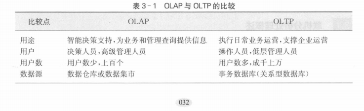
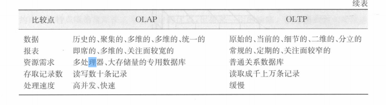
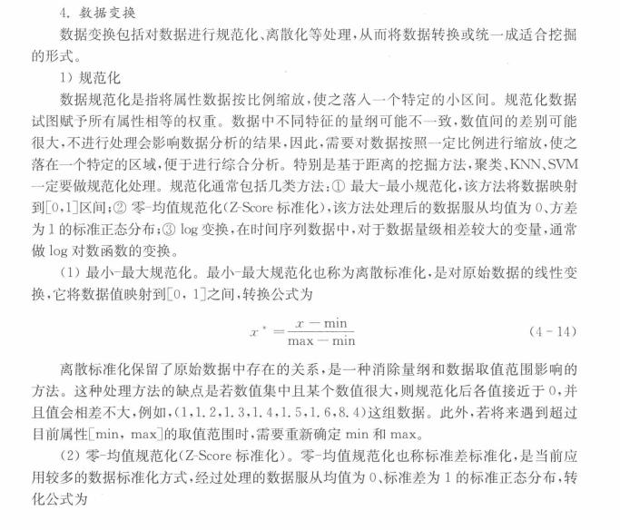
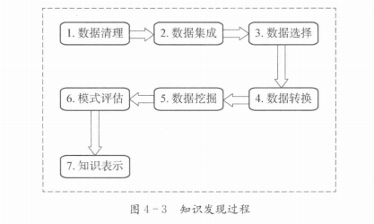
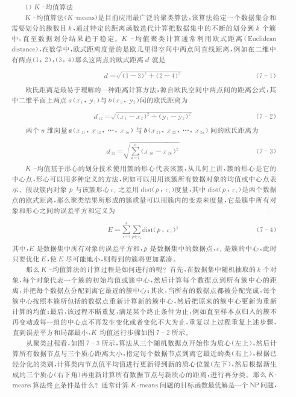
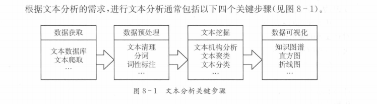
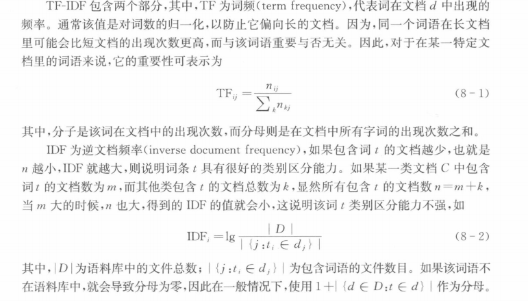

第一章
直接环境因素：供应商，客户，竞争对手，股东。
全球环境因素：政治因素，经济形式，科技发展，国际变革。
商务智能指企业利用现代信息技术从内外部收集数据，经过清洗、存储、综合数据，并通过先进技术工具分析，为管理者提供决策知识与洞察力，提升商务决策水平及企业竞争力。
商务智能数据来源（企业内部）：
业务处理系统(TPS)
管理信息系统(MIS)
决策支持系统（DSS）
企业资源计划（ERP)
供应链管理系统（SCM)
客户关系管理系统（CRM)
知识管理系统（KMS)
商务智能数据来源（企业外部）
竞争对手
政府部门
互联网
金融机构
第三方数据
1.提升运营管理水平
2.改善绩效
3.加强与客户及供应商的联系
4.获取竞争优势
5.精准预测
6.自动化决策制定
数据是事实或观察的结果，是对客观事物的逻辑归纳，是用于表示客观事物的未经加工的原始素材或原始事实流。
按管理层次：战略决策，战术决策，业务决策。
按性质：结构化决策，非结构化决策，半结构化决策。
第二章
数据仓库是一个面向主题的、集成的、相对稳定的、反映历史变化的数据集合，用于支持管理决策.
面向主题的，集成的，反应历史变化，相对稳定的，其他特点。
元数据是描述数据仓库内数据的结构和建立方法的数据，
元数据可分为技术元数据和业务元数据。
技术元数据：描述数据仓库开发、管理、维护相关数据，包括数据源、转换、模型、清洗规则等，服务于技术人员。
业务元数据：描述业务术语、数据内容、位置、可用性等，服务于管理层和业务人员，便于理解数据仓库数据。
ETL是数据仓库的核心技术流程，也是任何以数据为中心的项目的集成组件。
提取（extract)是指从一个或多个数据库、或其他数据源中读取数据；转换（transform)是将提取后的数据由一种数据类型转换为另一种数据类型，；加载（load)是指将数据加载到数据库中。
第三章
OLAP能让管理人员从多种角度对从原始数据中转化出来的、能够真正为用户所理解的并真实反映业务维特性的信息进行快速、一致和交互的存取，从而获得对数据更加深人的理解。
维，维的层次，维成员，度量
OLAP与OLTP的比较：
 OLAP：智能决策支持，面向决策层，用户少，数据源为数据仓库。数据具历史、聚集、多维、统一性；处理快。
OLTP：日常业务运营，面向操作层，用户多，数据源为事务数据库。数据呈原始、当前、细节、二维、分立性；处理慢。
多维度数据模型是面向分析的数据模型，能够提供多种观察的数据视图，支持面向分析的操作。主要由事实表和维度表组成
切片和切块、钻取、旋转。
第四章
标称属性、二元属性、序数属性、数值属性。
数据相似性：如果两个对象i和j不相似，则它们的相似度返回0，相似性值越高，表示对象之间的相似程度越大，值1指示完全两个对象完全相似。
数据相异性：相异性正好相反，如果对象相同，则它返回值0，相异性值越大表示两个对象差异越大。
数据清洗、数据集成、数据规约以及数据变换
维归约、数量归约和数据压缩。
1.最小-最大规范化
2.零-均值规范化
数据挖掘是从大量数据中挖掘有趣模式和知识的过程
数据清理，数据集成，数据选择，数据转换，数据挖掘，模式评估，知识表示
SEMMA模型：分别代表：数据取样，数据探索，数据调整，数据建模，模型评价。
CRISP-DM模型。
第五章
关联规则是形如A→B蕴含的表达式，其中A和B是不相交的项集，A称为规则的前件，而B称为规则的后件。
包含0个或多个项的集合，如{牛奶}构成一个一项集，{牛奶，尿布，面包}构成一个三项集。
含项集的事务数与总事务数的比值
在多个事务中频繁出现的项就是频繁项。
假设有一系列的事务，将这些事务中同时出现的频繁项组成一个子集，且子集满足最小支持度阈值，这个集合称为频繁项集.
项集A出现后，另一项集B出现的概率，或者说两个项集的条件概率
第一阶段从资料集合中找出所有的频繁项集，即项集的支持度均大于等于最小支持度阈值；
第二阶段从频繁项中产生关联规则。
第六章
是一种有监督的学习过程，即训练集中记录的类别是已知的，分类过程是将每一条记录归到对应的类别之中。
训练阶段，测试阶段
一、决策树分类器
原理：通过递归选择最优属性划分数据集，构建树形结构，叶节点为类别，内部节点为属性测试，使划分后的子集尽可能纯。
核心：基于信息增益（ID3）、增益率（C4.5）或Gini指数（CART）选择分裂属性，通过剪枝避免过拟合。
二、朴素贝叶斯分类器
原理：基于贝叶斯定理，假设属性条件独立，计算样本属于各分类的后验概率，取概率最高的类别。
核心：利用先验概率和类条件概率（假设属性独立），适用于文本分类等稀疏高维数据。
三、最近邻分类器（KNN）
原理：对未知样本，找到训练集中k个最近邻，根据多数邻居的类别投票决策。
核心：依赖距离度量（如欧氏距离）和k值选择，k小易受噪声影响，k大需平衡局部与全局相似性。
四、逻辑回归
原理：通过Sigmoid函数将线性组合转换为0-1概率，根据概率阈值（如0.5）判断二分类。
核心：线性模型+概率输出，最大化似然函数优化参数，适用于线性可分场景的概率预测。
第七章
聚类是把数据集分成不同的簇或类别，其中数据集中的所有样本被划分为若干个不相交的子集，每个子集称为一个"簇"，要求簇内的数据对象之间尽可能地相似，而不同簇的数据对象尽可能不同
（1）数据准备：包括对数据特征进行标准化、属性降维、噪声处理。
（2）特征选择：从最初的特征集中选择最有代表性的特征或特征组合，并将其存储于向量中。
（3）特征提取：通过对所选择的特征进行转换进而形成新的特征。
（4）聚类：选择适合特征类型的某种距离函数进行接近度或相似度的测量，而后根据距离进行聚类或分组。
（5）结果评估：对聚类结果进行评估，评估主要有3种：外部有效性评估、内部有效性评估和相关性测试评估。
K-means算法原理：
掌握7-4的公式，如何计算误差平方和
1.任选k个对象作为初始化的簇中心
2.repeat
3.计算对象与每个中心的距离，将每一对象赋给"最近"的簇
4.重新计算每个簇的平均值，选定新的簇中心
5.Until不再发生变化
步骤：
1.任意选取k个初始中心点
2.repeat
3.按照与medoids最近的原则，将剩余点分配到当前最佳的medoids所代表的类或簇中
4.在每一类或簇中，计算每个样本点与其他点的距离之和，选取距离之和最小的点作为新的medoids
5.Until重复（3）（4)的过程，直到所有的中心点不再发生变化，或已达到设定的最大选代次数
两个算法不一样的地方在于中心点的选取方式不同，在K-means算法将中心点取为当前簇中所有数据点的平均值，而K-medoids算法从前簇中选取这样一个点即它到其他所有（当前簇中的）点的距离之和最小作为中心点
1.将每个对象看作一个类，计算两两之间的最小距离
2.repeat
3.将距离最小的两个类合并成一个新类
4.重新计算新类与所有类之间的距离
5.Until重复（3）（4）的过程，直到所有类最后合并成一类
【注意：原文中未提供具体内容，仅有标题和页码参考104页】
第八章
数据获取，数据预处理，文本挖掘，数据可视化
分词、词法分析、句法分析、语义分析、语用分析，篇章分析
是抽取有效、新颖、有用、可理解的、散布在文本文件中的有价值知识，并且利用这些知识更好地组织信息的过程
（1）文档频率（DF）。DF统计特征词出现的文档数量，用来衡量某个特征词的重要性。
（2）词频-逆文档频率（termfrequency-inversedocumentfrequency，TF-IDF）：TF-IDF用以评估一个词对于一个文本集或一个语料库中的其中一个文本的重要程度，一个词的重要程度跟它在文本中出现的次数成正比，也跟它在文本集或语料库中出现的次数成反比。这
如何计算：
情感分析是指利用自然语言处理和文本挖掘技术，对带有感情色彩的主观性文本进行分析、处理和抽取的过程。
第九章
1.异构数据库环境
2.分布式数据源
3.半结构化
4.动态性强
5.丰富的多样性
Web内容挖掘、Web结构挖掘、Web使用挖掘。
一个页面被多次引用，则这个页面很可能是重要的；一个页面尽管没有被多次引用，但被一个重要页面引用，该页面也可能是很重要的；一个页面的重要性被均分并被传递到它所引用的页面。